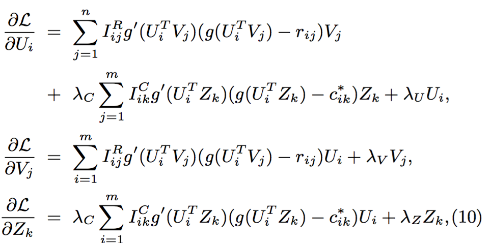

Translating SoRec: Social Recommendation Using Probabilistic Matrix Factorization
SoRec: 基于概率矩阵分解的社交化推荐
1. 介绍
推荐系统（Recommender Systems）的职责是尝试为用户（User）提议他们可能会感兴趣的项目（Item, 譬如电影、书籍、音乐、新闻、网页、图片，等等）。一类典型的推荐系统是基于协同过滤（Collaborative Filtering，以下简称CF）构建的，即一种通过收集与目标相似的其他用户（或其他的商品）的评分信息，来自动预测某位活跃用户的兴趣倾向的技术手段。构成CF的理论基础的一个重要假设是，活跃用户们会更倾向于喜爱那些与他们相似的用户也喜爱的项目 [13]。基于这个简洁有效的直觉，CF被应用于许多大型、著名的商业系统中，如Amazon。然而，受限于CF技术的本质，基于它的推荐系统存在以下一系列的固有弱点：
-
(1) 由于User-Item的打分矩阵经常十分稀疏（商业推荐系统中的有效评分数据的密度通常占不到1% [19]），基于记忆（Memory-based，或称启发式 [10]，[12]，[13]，[24] ）的CF算法常常无法为目标用户找到类似用户的配对，因为各种计算相似程度的方法，如PCC（the Pearson Correlation Coefficient）和余弦方法(Cosine Method），都假设被计算的一对用户至少有对一些相同的项目或物品进行过打分；更有甚者，几乎所有基于记忆或基于模型（Model-based [8]，[9]，[18]，[20]）的CF算法都无法处理那些从未给任何项目评分的用户的情况。
-
(2) 在现实中，我们经常向我们信得过的朋友询问电影、音乐和书籍等的推荐，并且我们的口味与个性很容易就受到身边人的影响。因此，那些传统的只挖掘“用户-项目”打分矩阵（User-item Rating Matrix，以下简称“U-I矩阵”）来给出推荐的推荐系统的输出就显得有些不切实际了。
以往的推荐系统需要假设用户满足“i.i.d.”的特性，即“独立且均匀分布”，这忽视了用户间的社交往来与联系。然而事实上，在线下，社交化的推荐是天天都在发生的。例如，当你向朋友询问一部好电影或一间好餐馆的推荐时，你本质上就是在索求一条口头的社交化推荐。Sinha等人在文献 [22] 中已经呈现了如下结果，即给予来自朋友和来自推荐系统的一系列推荐项目供用户选择时，根据质量和有用程度来比较，来自朋友的推荐通常受到偏好，即便来自推荐系统的推荐信息包含一些非常新颖的因素；朋友们被认为能够给出比推荐系统更好更有用的推荐信息 [1]。从该观点加以审视，以往忽略用户之间的社交关系网络结构的推荐系统似乎已经不合时宜了。
在 [21] 的最近研究中，通过分析超过一千万MSN用户构建的“谁与谁交谈”的社交网络，以及他们在Live搜索引擎上的相关搜索记录，P. Singla和M. Richardson发现用即时通讯保持联系的用户们更倾向于有共同的兴趣（即他们的网页搜索在内容和话题上均更相近）。因此，在现代推荐系统中，为了提高推荐的准确率我们需要把社交网络结构与U-I矩阵一并列入考虑。为了克服以上提到的弱点，基于“用户的社交网络会影响到其在网络上的个人行为”的直觉假设，我们提出将用户的社交网络结构与U-I矩阵融合，以此得出更精确、更个人化的推荐结果的做法，并称之为“SoRec”即“社交化推荐（Social Recommendation）”。事实上，我们开发的方法不仅能够用于社交化推荐，还适用于社交化搜索和其他许多信息检索与数据挖掘中的任务。
为了达到这个目标，这篇论文提出了一种基于概率因子分析将用户的社交网络结构与U-I矩阵整合分析的方法。我们用一个共享的用户隐特征空间（User Latent Feature Space）将上述两个不同的数据来源关联在一起，也即，在社交网络结构中的与在U-I矩阵中的是同一个用户隐特征空间。通过使用基于概率矩阵分解（Probabilistic Matrix Factorization，以下简称PMF）的因子分析方法，机器能够学习得到低阶的用户隐特征空间和项目隐特征空间（Item Latent Feature Space），从而呈现社交化的推荐结果。在Epinion数据集上的实验结果说明我们的方法效果要好于目前最先进的CF算法，尤其当（作为算法目标的某）活跃用户只有很少的、甚至没有评论时。此外，复杂度分析表明我们的方法可以被应用于非常大规模的数据集，因为它的计算量随着评论数仅呈线性增长。
本文的剩余部分按如下架构组织。在第二部分，我们将概述几个主要推荐系统构建途径，及它们的一些相关工作。第三部分集中说明我们在社交化推荐领域的工作。一份依据经验的算法分析结果被呈现于第四部分，然而是第五部分的结论和未来工作。
2. 相关工作
在本节中，我们将回顾几个主要推荐系统的构建途径，尤其是那些基于CF的；其中有两类方法受到广泛关注与研究：基于记忆的（Memory-based），和基于模型的（Model-based）。基于记忆的途径是目前最为流行的预测方法，并被广泛应用于商业CF系统中 [12]，[16]；这部分CF方法中，被分析的最为透彻的两类例子要属基于用户（User-based [2]，[7]，[10]，[25] ）和基于项目（Item-based [4]，[12]，[19] ）。基于用户的途径实际上是基于匹配到的相似用户给出过的评分信息，以预测某活跃用户（在其他项目上）的评分；而基于项目的途径实际上是要求计算出与那些与目标活跃用户选择过的项目相近的项目，同样预测他在那些尚未见过的项目上的评分。基于用户和基于项目的途径都经常使用PCC算法 [16] 和VSS算法 [2] 作为计算相似度的方法。通常来说，基于PCC的CF可以比VSS获得更好的结果，因为它将不同用户各异的评分习惯（惯性）也纳入了统计。
在基于模型的途径中，训练数据集被用于训练一个预定义好的模型。它的例子有聚类模型（Clustering Model [25] ），主题模型（Aspect Models [8]，[9]，[20] ）和隐因子模型（Latent Factor Model，以下简称LFM [3] ）。文献 [11] 提出了一种基于层级聚类（Hierarchical Clustering）的CF算法，以期在模型鲁棒性与预测准确度之间取得良好平衡，尤其是在能获得的数据量不足的情况下。文献 [8] 提出了一种基于概率隐语义分析（Probabilistic Latent Semantic Analysis）向连续值响应变量（Continuous-valued Response Variables）推论的算法。近来，许多面向CF的矩阵分解方法（如 [15]，[17]，[18]，[23]）被提出。这些方法主要都关注如何用低阶逼近来匹配U-I矩阵，并基于其结果来进行进一步的预测。低维因子模型（Low-dimensional Factor Model）成立的前提是，只有少数的因子（或属性）会影响用户的偏好，且用户的偏好向量由该用户实际被多少因子影响而定。
所有以上的推荐系统构建方法都是基于上述的用户“i.d.d”假设，忽略他们之间的社交活动，与现实中我们常常向朋友寻求推荐的情况不符。基于该直觉设定，近来许多研究者已开始分析一种基于信任关系（Trust-based）的推荐系统。在文献 [14] 中，一类能够考虑用户间的相互信任关系的CF推荐算法被提出；其中的CF过程不仅取决于用户之间的相似度评估，还受到由信任关系传播而计算得出的用户声誉的影响。在大型实际数据集上的实验表明，该项工作的成果增大了预测的覆盖面（即可预测的用户-项目评分的数量增多）而预测准确度不减。在文献 [1] 中，Bedi等人提出了一种基于信任关系的推荐系统，用于语义网络（Semantic Web）；这套系统在一台服务器上运行，而它基于的知识以实体（或“本体论”，Ontologies）的形式分布存在于网络上，用信任网络来生成推荐。这些方法都是基于仅用启发式算法来产生推荐的基于记忆的方法。而他们有如下这些共同的问题：信任关系网络和U-I矩阵之间的关系并没有被系统地研究过；以及，这些方法在面对巨大量级的数据集时都不太适用，因为他们需要成对地计算两两用户之间的相似度和信任度分值。
在本文中，通过基于PMF的隐因子分析（Latent Factor Analysis），亦通过同时、无缝地应用用户的社交网络结构信息和U-I打分矩阵，我们的推荐系统可以习得用户隐特征空间和项目隐特征空间。即便最近，类似的因子分析方法也在文献 [27]，[28] 中以文档检索和分类的目标得到运用，我们的方法和他们相比依然存在以下三个核心的区别：（1）我们的方法能够处理值缺失的问题，他们不能；（2）我们的方法用概率因子分析模型实现；（3）复杂度分析显示我们的方法更为高效，可适用于很大的数据集。
3. 社交化推荐框架
在本节中，我们首先用一个简单但清晰的“玩具”模型来示范我们的社交化推荐框架如何运作。然而，我们介绍社交化推荐中运用到的基于PMF的因子分析方法。
3.1 简单样例
让我们首先考虑如图-1(a)中所示的典型社交网络关系。图中总共有6个用户（即结点，从u1到u6）和8组用户间关系（边），同时每对关系都关联着一个取值范围[0,1]的权重（Weight）wij来说明用户ui有多么了解或相信用户uj。在常见的社交网站中，这个权重wij经常是用户ui明确表达出来的。如图-1(b)中所示，每个用户也会对一些项目（从i8到i8）基于5级的整数标准进行评分，从而表达他们对于特定项目的爱好程度。我们在本文中研究的问题是如何通过整合两个不同的数据来源，更有效、也更高效地预测U-I矩阵中缺失的值。就如第一节中提到的一样，由用户的社交联络会影响他们在网络上的行为这一直觉驱使，我们用UTZ和UTV，分别将社交网络图和U-I矩阵同步、无缝地进行了因子化分解，其中共享的低维矩阵U表示用户隐特征空间，Z是社交网络图的因子矩阵，而V代表低维的项目隐特征空间。如果我们在该社交化推荐的矩阵分解中使用5维的特征空间，便有：
其中Ui和Vj分别是指代用户ui和项目vj隐特征向量的列向量。注意，U和V的解并不是唯一的。然后我们就可以用式子 UiTVj 计算预测图-1(b)中的缺失权重wij（在预测之前，我们先要把上式矩阵相乘的计算结果用逻辑函数g(x)和和另一个映射函数f(x)做变换，分别在3.2和3.3节中介绍它们）。因此，使用这两个5维的矩阵U和V，所有的缺失值都可以被预测出来，如图-1(c)所示。注意到即便用户u4没有给任何项目评过分，我们的方法依然可以给出较合理的评分预测。
图一：“玩具”数据集的样例
因为这是个“玩具”数据集的样例，我们并无法评估预测准确度。然而，第四节中基于Epinion数据集的实验分析能够测试该方法的有效性。在接下来的几节里，我们将呈现一些我们如何用PMF对社交化推荐做因子分析的细节内容。
3.2 社交网络矩阵分解
假设有一个有向的社交网络图 G = (V, E)，其中顶点集合 V = {vi}ni=1 代表社交网络中的所有用户，边集合E代表用户间的所有两两联系。令C = {ci,k} 表示G对应的 m × m 邻接矩阵，在本文中它也被称为社交网络矩阵。对于任一对顶点vi和vk，令 ci,k ∈ (0,1] 代表vi到vk的边所关联的权重，若vi和vk之间没有边，则令ci,k = 0。权重ci,k的实际意义可以解释为社交网络中用户i信任或了解用户k的程度。注意到C是一个非对称矩阵，因为在社交网络，尤其是基于信任关系的社交网络中，用户i信任用户k不代表反之亦成立。
社交网络矩阵分解的思想是，通过分析社交网络图G，获取一个高质量的l维用户特征矩阵U。 令 U ∈ Rl×m 和 Z ∈ Rl×m 分别为隐用户特征矩阵、隐因子特征矩阵，而列向量Ui和Zk分别代表特定用户和特定因子的隐特征向量。定义在存在的（观测到的）社交网络关系上的条件分布（Conditional Distribution）概率为：

其中 N(x|μ,σ2) 是一个具有均值μ和方差σ2的高斯分布所对应的概率密度函数，而IikC是一个指示器函数——当用户i表示信任或知道用户k时才等于1，否则等于0。函数g(x)是定义为 g(x) = 1/(1 + exp(−x)) 的逻辑函数（即sigmoid函数），使得将UiTZk的范围限制在[0, 1]之内成为可能。
同时，着眼于用户特征矩阵、因子特征矩阵的零均值球形高斯先验（Spherical Gaussian Priors）：
因此，通过一个简单的贝叶斯推理，我们可以得到
在社交网站中，ci,k的值通常被用户i向用户j明确的表达出来，而因为数据噪声的存在和对社交网络图结构信息的罔顾，它并无法很准确的描述用户之间的关系。例如，类似文献 [26] 中的Web链接图，在一个基于信任关系的社交网络中，若用户i表达了对很多用户的信任，信任值ci,k的可信赖度（Confidence）应该被削减；而当用户k受到许多用户的信任和关注时，其权重值ci,k则应适当提升。因此，我们使用合并考虑上述这两个因素的ci,k*来替代方程(1)中的ci,k。

ci,k*的定义中，d+(vi)代表端点vi的出度（Outdegree），而d-(vk)代表端点vk的入度（Indegree）。
3.3 用户-项目 矩阵分解
现在考虑U-I矩阵，假设有m个用户，n部电影，以及用户对电影在[0, 1]范围内的评分值。事实上，多数推荐系统使用从1到Rmax的整数评分系统来表达用户基于项目的判断。在本文中，不失一般性，我们用函数 f(x) = (x − 1)/(Rmax − 1) 将评分级别1, ..., RmaxNow映射到[0, 1]区间。令Ri,j表示用户i对电影j的评分，U ∈ Rl×m 和 V ∈ Rl×n 分别为隐用户特征矩阵和隐电影特征矩阵，以及列向量Ui和Vj表示基于特定用户或特定电影的隐特征矩阵。定义在存在的（观测到的）条件分布概率为
其中Ii,jR为一个指示器函数——若用户i曾经点评过电影j，那么值为1，否则为0。同时，着眼于用户特征矩阵、电影特征矩阵的零均值球形高斯先验：

因此，与方程(3)很相似地，我们可以通过贝叶斯推论得到
3.4 社交化推荐的矩阵分解
如同第一节分析过的，为了反映出用户的社交关系会影响其对项目兴趣的判断这一现象，我们用图-2对社交化推荐这一问题建模，将社交网络图和U-I矩阵融合为一个具有一致性的、简洁紧凑的特征表达。基于图-2，社交化推荐的后验分布的对数由下式给出：
其中C是一个不由参数决定的常量。在固定超参数（Hyperparameters，如观测值的噪声方差、先验概率分布的方差等）的前提下，最大化这个以三个隐特征矩阵为变量的后验的log值，就等同于最小化如下这个由平方差之和（Sum-of-squared-errors）与二次方正则化项（Quadratic Regularization Terms）构成的目标函数（Objective Function）：
其中 λC = σR2/σC2，λU = σR2/σU2，λV = σR2/σV2，λZ = σR2/σZ2，而 ∥ · ∥2F 是Frobenius范数的标记。通过对方程(9)应用Ui、Vj和Zk的梯度下降（Gradient Descent）可以找到目标函数的一个局部最小（Local Minimum）：

其中 g′(x) = exp(x)/(1 + exp(x))2 是逻辑函数 g(x) 的导数。为了减少模型的复杂度因素，在第四节的所有实验中我们都设置 λU = λV = λZ 为相等。
3.5 复杂度分析
梯度下降方法的主要计算量在于，在每个点，求出目标函数L的值，以及L在变量各自的维度方向上的梯度。因为矩阵R和C都十分稀疏，计算目标函数L的时间复杂度是 O(ρRl + ρCl)，ρR 和 ρC 分别是矩阵R和C中非零元素的个数。计算方程(10)中的梯度 ∂L/∂U，∂L/∂V 和 ∂L/∂Z 的复杂度分别是 O(ρRl + ρCl)，O(ρRl) 和 O(ρRl)。因此，一次迭代中总计算的时间复杂度是O(ρRl + ρCl)，表明它仅仅随着两个稀疏矩阵中非零元素个数（Observations）呈线性增长。该复杂度分析过程表明了我们提出的方法之高效，可适配很大规模的数据集。
4. 实验结果分析
本节中，我们做了几组实验，来将我们的方法得出的推荐结果的质量与其他最前沿的CF方法做比较。我们的实验目的在于阐明如下问题：
- 我们的方法与其他已发表成果中的前沿CF算法比较起来，孰优孰劣？
- 模型中的参数λC如何影响预测结果的准确度？
- 当我们的方法应用于评分数量有差距不同的用户组时，各种情况之间的表现比较又何如？
- 用户从未打分时，我们的方法表现又如何？
- 我们的算法中大规模数据集上真的表现良好么？
接下来，4.3节回答问题1，4.4节阐明问题2，4.5节描述了基于问题3和问题4的目的而设计的实验，最后，4.6节展示基于问题5的分析。
4.1 Epinion数据集的描述
过去的十年间，每天都有海量的数据在互联网上产生。数百万人通过Facebook等在线社交网络服务，显性或隐性地，对互相产生各种影响。结果便是，我们拥有许多在线上挖掘社交网络，以期做出社交化推荐的机会。
我们选择了Epinions作为社交化推荐实验的数据来源。Epinions.com是一个建立于1999年的著名知识分享和评论网站。用户（内容贡献者）们需要免费注册，然后就可以开始发表他们对各种话题的个人观点和评论，例如关于产品、公司、电影，甚至是其他用户发表的评论。用户们也可以为产品或评论打上1-5的整数评级。当未来的顾客们纠结着某件商品是否值得购买，或某部电影是否值得一看等问题时，这些评分和评论便势必会对他们的选择形成影响。每个Epinions的成员都维护着一个“信任列表”，呈现用户之间互相信任关系的网络，也同时维护着一个“屏蔽（不信任）名单”，呈现不信任关系的网络。该网络被称为信用网（“Web of Trust”），被Epinions用于对产品评论做重新排序后再呈现，比如一个用户会首先看到他较为信任的那些用户的评论。Epinions因此成为社交化推荐实验的一个理想数据来源。请注意，在本文中我们仅仅采用用户之间的相互信任的关系而忽略屏蔽（或“黑名单”）关系，原因有二：（1）为了保护用户隐私，他们的黑名单在Epinions是不公开的，从而我们的数据集中没有这方面数据；（2）根据文献 [6] 的说法，对于不信任关系的理解要比信任关系更复杂，说明用户的隐信任关系空间或许与用户的隐不信任关系空间有不同结构。基于不信任关系的社交化推荐研究将被放在未来工作中进行。
在我们的实验中使用的该数据集包含了40,163位至少点评过一个项目的用户，和总计139,529件的不同项目信息。 总评论数是664,824。U-I矩阵的密度是
664824 / (40163 × 139529) = 0.01186%
我们可以看到Epinions的U-I矩阵相对来说是极其稀疏的，因为两个最著名的CF数据集Movielens（6,040位用户，3,900部电影和1,000,209份评分) 与Eachmovie7（74,424位用户，1,648部电影和2,811,983份评分）分别是4.25%和2.29%。尤其地，在Movielens数据集中，每位用户都至少对20个项目做过评分，而相应地，在我们的Epinions数据集中，代表总“人口”48.67%的18,826位用户都只提交了不超过5份评分。此外，我们选择Epinions的一个重要原因是我们所需要的用户社交关系网络的信息并不被包含在MovieLens和Eachmovie数据集中。Epinions的U-I矩阵的统计数据被总结在表-1中。
至于用户的社交网络信息，总共存在的信任关系数量是487,183。社交网络的入度和出度分布遵循幂律分布（Power-law Distribution，类似2-8原则），就像在许多社交网络中所发现的那样。Epinions社交网络中的该分布详见图-3。
4.2 计量指标（Metrices）
我们使用平均绝对误差（Mean Absolute Error，以下简称MAE）作为指标来衡量我们提出的方法的实际推荐预测效果，其他CF算法在同指标下进行比较。MAE定义如下：
其中ri,j表示用户i实际给项目j打的评分，ri,j(p-hat)表示我们的算法预测用户i给项目j打的评分，N表示测试的评分数量。
4.3 效果比较
本节中，为了展示我们的SoRec算法实现的效果提升，我们将它与其他一些前沿算法对比：最大边距矩阵分解（Maximum Margin Matrix Factorization 即MMMF [15] ），概率矩阵分解（PMF [18]），和受限概率矩阵分解（Constrained Probabilistic Matrix Factorization 即CPMF [18] ）。
我们使用不同数量的训练数据（99%，80%，50%，20%）来测试所有算法。例如，使用99%的数据作为训练集的时候，意味着我们随机从Epinions数据集选择99%的评分来训练模型，对剩余1%的评分加以预测；而随机选择训练集的过程将会独立地重复5次。实验结果见表-2。我们的算法使用 λC = 10，λU = λV = λZ = 0.001 的参数设置，并且在接下来数节的实验中，我们都如此设定。从表-2可以明显看到我们的算法比其他算法效果更好。平均下来，我们的算法相比MMMF，PMF和CPMF分别提升了11.01%，9.98%和7.82%的准确率。这样的提升是非常意义重大的，表明我们的SoRec算法将大有可为。
4.4 参数λC的影响
SoRec的主要优势是它的模型整合了社交网络信息，对预测用户偏好大有帮助。在我们的模型中，参数λC用以平衡来自U-I评分矩阵和用户社交关系网的数据的影响。若λC = 0，我们实际上只从U-I矩阵挖掘信息用来做矩阵分解，而相反地若λC = inf（正无穷大），我们就只是从社交网络中提取信息来预测用户偏好。在另外的情况下，我们将两个数据源的信息融合，提供给PMF过程来预测活跃用户对各项目的评分。
图-4展示了λC的变化如何影响MAE指标。我们可以看到，λC的变化给推荐结果带来很大的影响，也说明将两种信息源融合的方法很大地提升了推荐准确率。当λC增大，预测准确率一开始也随之提升，但是当λC越过了某阈值（threshold）再继续增大时，准确率不升反降低。该现象与“单独使用其中一种数据源训练模型不可能比融合两种模型得来的效果好”的直觉不谋而合。根据图-4，无论隐空间矩阵是5维还是10维，都可以观察到 λC ∈ [10, 20] 时SoRec算法在Epinions数据集上达到近似最优的预测准确率，而较小的λC值（如0.1）或较大值（如100）都可能使得模型表现变差。此外，参数λC最佳值的不敏感性也正说明我们的模型很容易就被训练到较好效果。
4.5 基于不同用户预测的效果
本文需要解决的一个重要目标课题便是，如何为只提供了少量甚至没有评分记录的用户也提供较精确的推荐。即便前人的工作中也经常关注该关键问题，很少有方法能在用户评分不足的情况下表现良好。因此，为了将SoRec与其他方法彻底比较一番，我们首先要将用户按照他们在数据集中出现的评分数量进行分组，然后评估算法对于不同组用户的预测效果分别如何。实验结果在图-5中呈现。用户被分到以下10个组中：“=0”，“1−5”，“6−10”，“11−20”，“21−40”，“41−80”，“81−160”，“160−320”，“320−640”，和“> 640”，指的是该用户总计的点评数有多少。
图-5（b），图-5（d），图-5（f）和图-5（h）根据训练数据的分组，总结了测试数据的分布情况。例如，在图-5（d）中，测试数据里总计有1,089对用户-项目，其在训练数据中关联的用户均没有评分记录（“=0”）。事实上，图-5（f）并不包含“> 640”的标签，因为没有用户点评过超过640件项目；基于同样原因图-5（h）也不包含“320−640”和“> 640”的标签.在 图-5（a），图-5（c），图-5（e）和图-5（g）中可以看到我们的算法总体而言表现得比其他更好，尤其是在用户评分不足的情况下。当目标用户没有评分记录（“= 0”）时，我们的方法比MMMF，PMF和CPMF分别在效果上提升了36.75%，40.82%和41.75%。即便训练集中的用户评分记录逐渐增加，所有算法的效果逐渐开始接近，我们的模型依然能够全方位地生成超越其他算法的推荐结果准确率。
4.6 效率分析
3.5节的复杂度分析已经说明了我们算法的时间复杂度依据评分数量的增长呈线性增长，证明它可适配很大规模的数据集。事实上，即便采用一种非常简单的梯度下降方法，我们的算法也十分高效。在使用99%样本作为训练数据的实验中，每次迭代只需要不到一秒钟，此外就像图-6（a）所示，只要迭代1,200次不到就会趋近会聚，大概只需要18分钟。当使用20%数据作为训练集时（图-6（d））我们只需要用5分钟就能完成模型的训练。所有这些实验都在一台普通的个人电脑上完成，配置是一颗Intel Pentium D CPU (3.0 GHz主频，双核) 和 1 Giga byte 的内存。
由图-6，我们也可以观察到当λC的值很小（如0.1或1）时，在200-300次迭代后，模型开始过拟合（Overfit）；而当取 λC = 10等较大值时，该过拟合问题并不会出现。这些实验明确地表现出，在Epinions数据集上，若社交网络信息对模型的影响权重不足时易造成过拟合，且预测准确率可以通过适当给予社交网络数据更大的权重来提升。
5. 总结及未来工作
在本文中，根据“用户的社交关系网会影响其在网络上的表现”的直觉假设，我们呈现了一种创新的社交化推荐框架，将“用户-项目”打分矩阵与用户社交关系网络的信息融合，进行概率矩阵分解。实验结果表明我们的方法具有比各种前沿的协同过滤（CF）算法更好的预测效果，并且复杂度分析显示它可以适用于相当大的数据集。此外，文中介绍的基于PMF的数据融合方法不仅适用于社交化推荐，也可以被用在其他流行的研究课题中，例如社交化、个性化的搜索，和其他许多信息检索、数据挖掘的相关课题。
本文中，我们用两个向量（特定用户、特定项目）的内积来匹配观测到的评分数据；该方法假设观测到的数据是数个隐向量的线性组合。即便我们已经使用了逻辑函数（sigmoid）来限制内积结果的区间，基于这个假设还有一种更自然、更精确的拓展方法，即使用这两个低维度向量的核（kernel）表示，比如高斯核（Gaussian Kernel）或多项式核（Polynomial Kernel），将两个向量之间的关系映射到非线性空间，从而进一步提升模型的效果。
我们只使用了用户间的信任关系，而在许多线上社交网络中，用户之间的不信任关系同样被许多人明确表示出来。因为用户的信任特征空间或许与对应的用户的不信任特征空间结构不一，我们不能简单地将它加入模型。将来，我们需要审视、调查以下两个问题：不信任关系的信息是否对提升预测质量有益，和如何将其纳入模型来考虑。
融合社交网络信息时，我们忽略了用户间的信息扩散和传播。一种或许更精确的方法是要考虑用户之间的信息传播过程的。因此，我们需要将社交网络矩阵分解的过程替换为社交网络信息扩散的过程。基于这种考虑，数据的稀疏性问题可能会有一定缓解，也有一定的提升预测准确度的潜力。